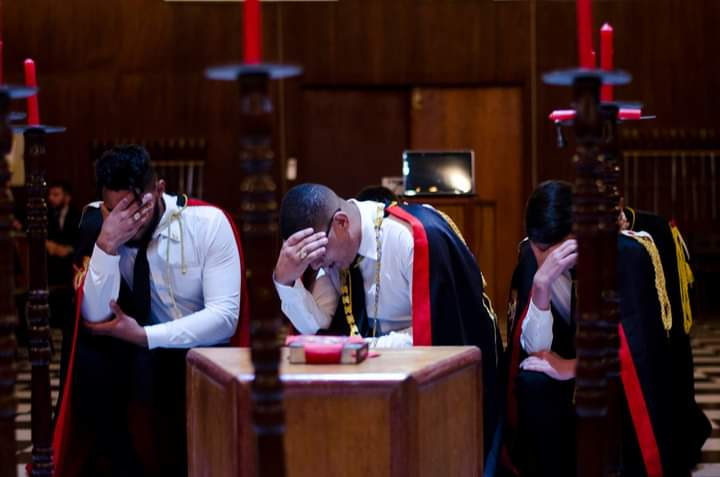

-
Devoção a Deus
Dependente de Deus
Deus na frente
-
Honrar a Família
Somos irmãos por escolha
Guardião da família
-
Amor a pátria
Filhos da Pátria amada Brasil
Defenssor da Pátria
Dependente de Deus
Deus na frente
Somos irmãos por escolha
Guardião da família
Filhos da Pátria amada Brasil
Defenssor da Pátria